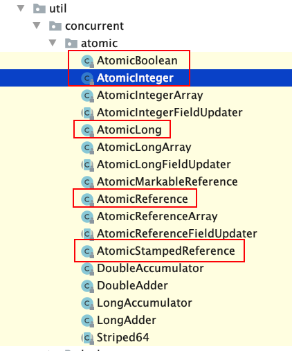
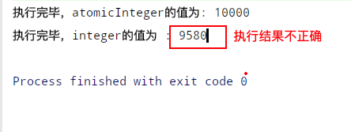
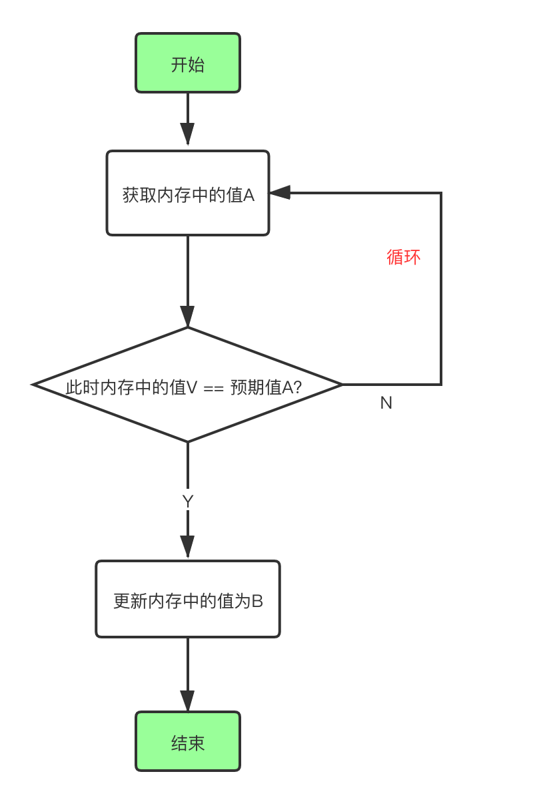
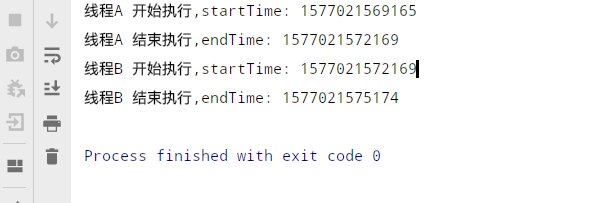

CAS 即 compare and swap 比较并交换， 涉及到三个参数，内存值V, 预期值A, 要更新为的值B, 拿着预期值A与内存值V比较，相等则符合预期，将内存值V更新为B, 不相等，则不能更新V。
为什么预期值A与内存值V不一样了呢？
在多线程环境下，对于临界区的共享资源，所有线程都可以访问修改，这时为了保证数据不会发生错误，通常会对访问临界区资源加锁，同一时刻最多只能让一个线程访问(独占模式下)，这样会让线程到临界区时串行执行，加锁操作可能会导致并发性能降低，而循环CAS可以实现让多个线程不加锁去访问共享资源，却也可以保证数据正确性。 如 int share = 1，线程A获取到share的值1，想要将其修改为2，这时线程B抢先修改share = 3了，线程A这时拿着share =1 预期值与实际内存中已经变为3的值比较, 不相等，cas失败，这时就重新获取最新的share再次更新，需要不断循环，直到更新成功；这里可能会存在线程一直在进行循环cas，消耗cpu资源。
cas缺点：
1、存在ABA问题
2、循环cas, 可能会花费大量时间在循环，浪费cpu资源
3、只能更新一个值(也可解决，AtomicReference
原子类在JUC的atomic包下提供了 AtomicInteger，AtomicBoolean, AtomicLong等基本数据类型原子类,还有可传泛型的AtomicReference
类图结构如下：

分别用AtomicInteger和 Integer 演示多个线程执行自增操作，是否能够保证原子性，执行结果是否正确
代码如下：
/**
* @author zdd
* 2019/12/22 10:47 上午
* Description: 演示AtomicInteger原子类原子操作
*/
public class CasAtomicIntegerTest {
static final Integer THREAD_NUMBER = 10;
static AtomicInteger atomicInteger = new AtomicInteger(0);
static volatile Integer integer = 0;
public static void main(String[] args) throws InterruptedException {
ThreadTask task = new ThreadTask();
Thread[] threads = new Thread[THREAD_NUMBER];
//1,开启10个线程
for (int j = 0; j < THREAD_NUMBER; j++) {
Thread thread = new Thread(task);
threads[j]= thread;
}
for (Thread thread:threads) {
//开启线程
thread.start();
//注： join 为了保证主线程在所有子线程执行完毕后再打印结果，否则主线程就阻塞等待
// thread.join();
}
// 主线程休眠5s, 等待所有子线程执行完毕再打印
TimeUnit.SECONDS.sleep(5);
System.out.println("执行完毕，atomicInteger的值为: "+ atomicInteger.get());
System.out.println("执行完毕，integer的值为 : "+ integer);
}
public static void safeIncr() {
atomicInteger.incrementAndGet();
}
public static void unSafeIncr() {
integer ++;
}
static class ThreadTask implements Runnable{
@Override
public void run() {
// 任务体，分别安全和非安全方式自增1000次
for (int i = 0; i < 1000; i++) {
safeIncr();
}
for (int i = 0; i < 1000; i++) {
unSafeIncr();
}
}
}
}执行结果如下：

疑问：上文代码中注，我本想让主线程调用每个子线程 join方法，保证主线程在所有子线程执行完毕之后再执行打印结果，然而这样执行导致非安全的Integer自增结果也正确，猜想是在执行join方法，导致这10个子线程排队有序在执行了？ 因此注释了该行代码 ，改为让主线程休眠几秒来保证在子线程执行后再打印。
AtomicInteger如何保证原子性,AtomicInteger持有Unsafe对象，其大部分方法是本地方法，底层实现可保证原子操作。
public class AtomicInteger extends Number implements java.io.Serializable {
// setup to use Unsafe.compareAndSwapInt for updates
private static final Unsafe unsafe = Unsafe.getUnsafe();来看一下 AtomicInteger 的自增方法 incrementAndGet()，先自增，再返回增加后的值。
代码如下：
public final int incrementAndGet() {
//调用unsafe的方法
return unsafe.getAndAddInt(this, valueOffset, 1) + 1;
}继续看unsafe如何实现
public final int getAndAddInt(Object var1, long var2, int var4) {
int var5;
do {
//1.获取当前对象的内存中的值A
var5 = this.getIntVolatile(var1, var2);
//2. var1,var2联合获取内存中的值V，var5是期望中的值A， var5+var4 是将要更新为的新值
} while(!this.compareAndSwapInt(var1, var2, var5, var5 + var4));
//3. 更新成功，跳出while循环，返回更新成功时内存中的值（可能下一刻就被其他线程修改）
return var5;
}执行流程图如下：

Unsafe 的compareAndSwapInt是本地方法，可原子地执行更新操作，更新成功返回true,否则false
public final native boolean compareAndSwapInt(Object var1, long var2, int var4, int var5);什么是ABA问题？
例如 线程A获取变量atomicInteger =100, 想要将其修改为2019 （此时还未修改）, 这时线程B抢先进来将atomicInteger先修改为101，再修改回atomicInteger =100，这时线程A开始去更新atomicInteger的值了，此时预期值和内存值相等，更新成功atomicInteger =2019；但是线程A 并不知道这个值其实已经被人修改过了。
代码演示如下：
/**
* zdd
* Description: cas的ABA问题
*/
public class CasTest1 {
// static AtomicInteger atomicInteger = new AtomicInteger(100);
/* 这里使用原子引用类，传入Integer类型，
* 和AtomicInteger一样,AtomicReference使用更灵活，泛型可指定任何引用类型。
* 也可用上面注释代码
*/
static AtomicReference<Integer> reference = new AtomicReference<>(100);
public static void main(String[] args) {
//1.开启线程A
new Thread(()-> {
Integer expect = reference.get();
try {
//模拟执行任务，让线程B抢先修改
TimeUnit.SECONDS.sleep(3);
} catch (InterruptedException e) {
e.printStackTrace();
}
System.out.println( "执行3s任务后， 修改值是否成功 "+ reference.compareAndSet(expect,2019)+ " 当前值为： "+ reference.get());
},"A").start();
//2.开启线程B
new Thread(()-> {
// expect1 =100
Integer expect1 = reference.get();
//1,先修改为101，再修改回100，产生ABA问题
reference.compareAndSet(expect1,101);
//expect2 =101
Integer expect2 = reference.get();
reference.compareAndSet(expect2, 100);
},"B").start();
}
} 执行结果如下：可见线程A修改成功
A 执行3s任务后， 修改值是否成功:true 当前值为： 2019解决CAS的ABA问题，是参照数据库乐观锁，添加一个版本号，每更新一次，次数+1,就可解决ABA问题了。
AtomicStampedReference
/**
* zdd
* 2019/11/4 6:30 下午
* Description:
*/
public class CasTest1 {
//设置初始值和版本号
static AtomicStampedReference<Integer> stampedReference = new AtomicStampedReference<>(100,1);
public static void main(String[] args) {
//2，采用带有版本号的
new Thread(()-> {
Integer expect = stampedReference.getReference();
int stamp = stampedReference.getStamp();
try {
//休眠3s,让线程B执行完ABA操作
TimeUnit.SECONDS.sleep(3);
} catch (InterruptedException e) {
e.printStackTrace();
}
//此时 stamp=1，与实际版本号3不等，这里更新失败就是stamp没有获取到最新的
System.out.println("是否修改成功： "+stampedReference.compareAndSet(expect, 101, stamp, stamp +1));
System.out.println("当前 stamp 值： " + stampedReference.getStamp()+ "当前 reference: " +stampedReference.getReference());
},"A").start();
new Thread(()-> {
Integer expect = stampedReference.getReference();
int stamp = stampedReference.getStamp();
try {
//休眠1s,让线程A获取都旧的值和版本号
TimeUnit.SECONDS.sleep(1);
} catch (InterruptedException e) {
e.printStackTrace();
}
// 1，100 -> 101, 版本号 1-> 2
stampedReference.compareAndSet(expect, 101 , stamp, stamp+1);
//2, 101 ->100, 版本号 2->3
Integer expect2 = stampedReference.getReference();
stampedReference.compareAndSet(expect2, 100, stampedReference.getStamp(), stampedReference.getStamp() + 1);
},"B").start();
}
}执行结果如下：
是否修改成功： false
当前 stamp 值： 3 当前 reference: 100package cas;
import java.util.concurrent.TimeUnit;
import java.util.concurrent.atomic.AtomicReference;
/**
* @author zdd
* 2019/12/22 9:12 下午
* Description: 利用cas手动实现自旋锁
*/
public class SpinLockTest {
static AtomicReference<Thread> atomicReference = new AtomicReference<>();
public static void main(String[] args) {
SpinLockTest spinLockTest = new SpinLockTest();
//测试使用自旋锁，达到同步锁一样的效果 ,开启2个子线程
new Thread(()-> {
spinLockTest.lock();
System.out.println(Thread.currentThread().getName()+" 开始执行,startTime: "+System.currentTimeMillis());
try {
//休眠3s
TimeUnit.SECONDS.sleep(3); } catch (InterruptedException e) { e.printStackTrace();
}
System.out.println(Thread.currentThread().getName()+" 结束执行,endTime: "+System.currentTimeMillis());
spinLockTest.unLock();
},"线程A").start();
new Thread(()-> {
spinLockTest.lock();
System.out.println(Thread.currentThread().getName()+" 开始执行,startTime: "+System.currentTimeMillis());
try {
//休眠3s
TimeUnit.SECONDS.sleep(3); } catch (InterruptedException e) { e.printStackTrace();
}
System.out.println(Thread.currentThread().getName()+" 结束执行,endTime: "+System.currentTimeMillis());
spinLockTest.unLock();
},"线程B").start();
}
public static void lock() {
Thread currentThread = Thread.currentThread();
for (;;) {
boolean flag =atomicReference.compareAndSet(null,currentThread);
//cas更新成功，则跳出循环，否则一直轮询
if(flag) {
break;
}
}
}
public static void unLock() {
Thread currentThread = Thread.currentThread();
Thread momeryThread = atomicReference.get();
//比较内存中线程对象与当前对象，不等抛出异常，防止未获取到锁的线程调用unlock
if(currentThread != momeryThread) {
throw new IllegalMonitorStateException();
}
//释放锁
atomicReference.compareAndSet(currentThread,null);
}
}执行结果如下图：

通过全文，我们可以知道cas的概念，它的优缺点；原子类的使用，内部借助Unsafe类循环cas更新操作实现无锁情况下保证原子更新操作，进一步我们能够自己利用循环cas实现自旋锁SpinLock,它与同步锁如ReentrantLock等区别在于自旋锁是在未获取到锁情况，一直在轮询，线程时非阻塞的，对cpu资源占用大，适合查询多修改少场景，并发性能高；同步锁是未获取到锁，阻塞等待，两者各有适用场景。